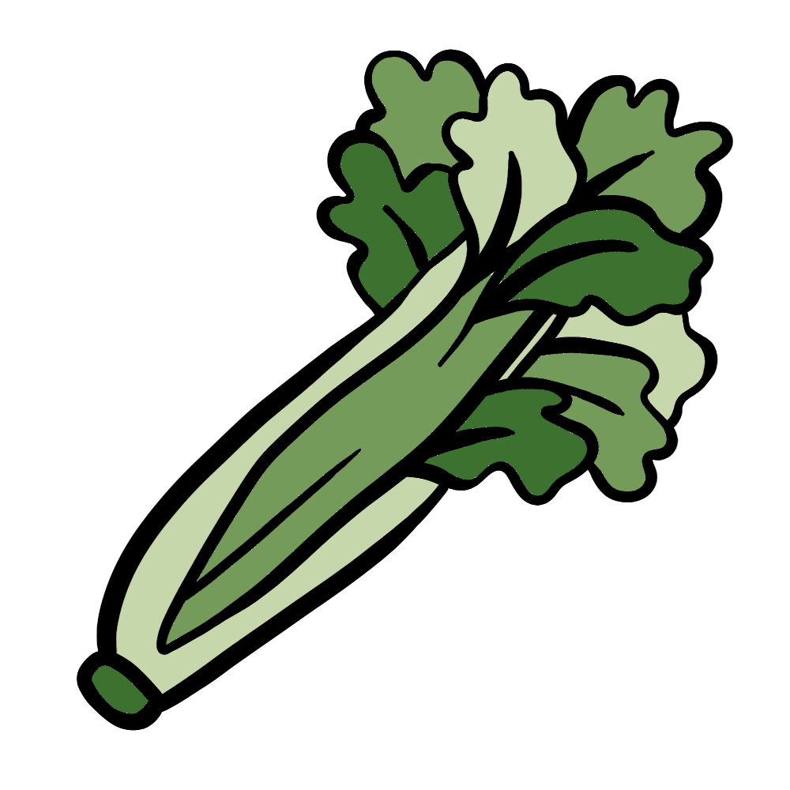

How to grow Celery
A Step by step Guide
Celery is a crunchy, nutrient-rich vegetable that requires consistent moisture and cool temperatures to thrive. Though it takes longer to mature than some vegetables, growing celery at home is highly rewarding. Follow this guide to grow crisp and flavorful celery in your garden or containers.
Difficulty Rating: Moderate
Best Season to Grow: Spring and Fall
Can Be Grown: Both Indoors and Outdoors
Supplies Needed to Grow Celery
Celery seeds or seedlings
Well-draining, nutrient-rich soil
Compost or balanced fertilizer (5-10-10)
Garden trowel
Watering can or hose
Mulch (straw or wood chips)
Raised garden bed or deep containers (for small spaces)
Floating row covers (for temperature regulation)
Setting Up Your Celery Garden
Choosing the Right Location
Sunlight: Celery thrives in full sun to partial shade, requiring at least 6 hours of sunlight per day.
Soil: Use rich, well-draining soil with a pH between 6.0 and 7.0.
Spacing: Plant celery 6-8 inches apart in rows spaced 12-18 inches apart.
Indoor Setup: If growing indoors, use deep containers (at least 8 inches deep) and place them in a sunny location or under grow lights.
Preparing the Soil
Loosen the soil to a depth of at least 12 inches to encourage root development.
Mix compost or well-rotted manure into the soil before planting.
Avoid heavy, compacted soils that can hinder root growth.
Planting Celery
From Seeds: Start seeds indoors 10-12 weeks before the last frost. Sow them ¼ inch deep in seed trays and transplant outdoors when seedlings are at least 4-6 inches tall.
From Seedlings: Transplant seedlings directly into the garden after the last frost when the weather is consistently cool.
Blanching: To achieve tender, pale stalks, wrap the base of the celery plant with newspaper or mound soil around the stalks as they grow.
Caring for Your Celery Plants

Watering
Keep the soil consistently moist but not soggy, providing 1-1.5 inches of water per week.
Water deeply to encourage strong root growth.

Fertilizing
Apply a balanced fertilizer every 2-3 weeks during the growing season.
Side-dress plants with compost mid-season for an extra nutrient boost.

Mulching & Weed Control
Apply mulch around plants to retain moisture and suppress weeds.
Regularly remove weeds to prevent competition for nutrients.

Pest and Disease Prevention
Watch for pests such as aphids, slugs, and celery leaf miners.
Use insecticidal soap or neem oil to deter pests.
Rotate crops yearly to prevent soil-borne diseases like blight and root rot.

Harvesting
Celery is ready to harvest in 85-120 days, depending on the variety.
Harvest when stalks are 8-12 inches tall and firm.
Cut stalks at the base as needed or harvest the entire plant.
By following these steps, you can successfully grow celery and enjoy fresh, homegrown produce in your meals. Happy gardening! 🌱